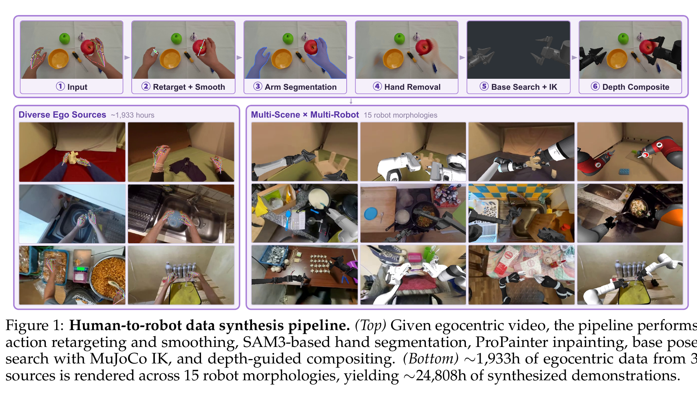
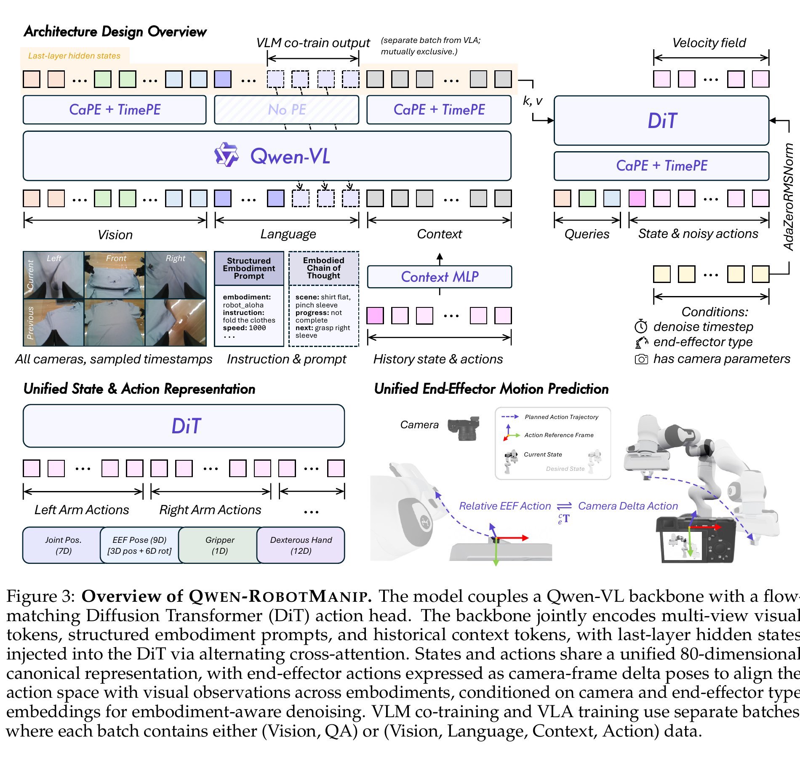
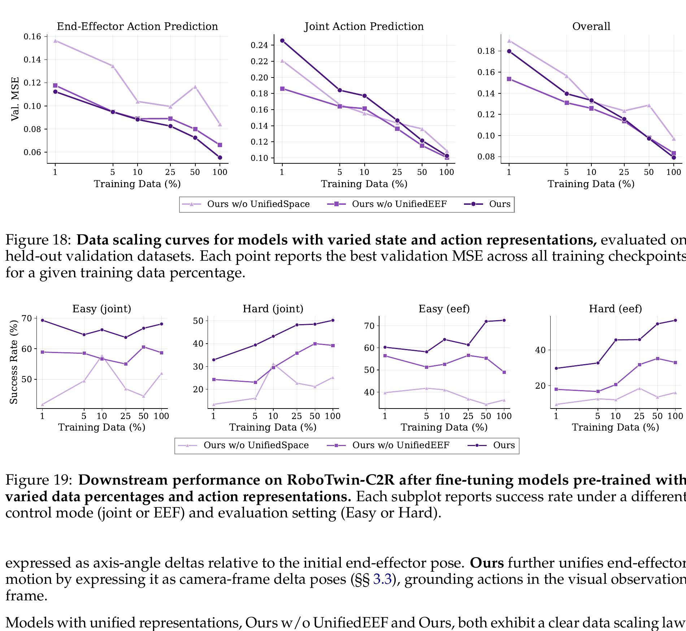
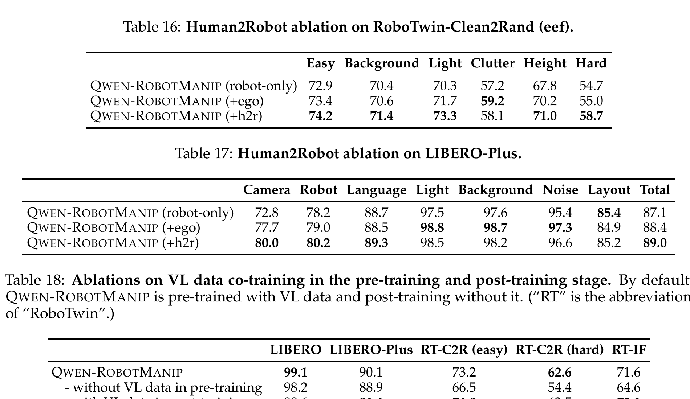

Qwen-RobotManip: Alignment Unlocks Scale for Robotic Manipulation Foundation Models
一句话看懂：不是“收集更多数据”，而是先把不同数据说成同一种物理语言
这篇论文的主张不是“Ego 视频很多，所以直接混进去训练”。作者认为，异构机器人数据若在动作含义、坐标系、视觉外观上彼此冲突，数据越多反而越互相干扰。它先做三件对齐：用统一槽位容纳不同本体、把末端动作改写到相机坐标系、用 Human-to-Robot 把人手视频变成机器人外观与机器人轨迹；之后才把规模拉到约 38,100 小时。

第 1 步：输入是“人看见什么、手怎么动”
视频提供物体、场景和视角；手部关键点提供运动。它还不是某台机器人的 action。
输入是什么：相机图像或视频，加上任务指令和机器人当前状态。它们还是原始观测，模型尚未把它们变成可用于预测或控制的特征。
这一步究竟做什么：本步骤执行“输入是“人看见什么、手怎么动””。具体来说，视频提供物体、场景和视角；手部关键点提供运动。它还不是某台机器人的 action。 这里处理的只是整条链路中的一个接口：把上一步的结果整理成下一步能够正确读取和继续计算的形式。
输出到哪里：经过本步骤处理、含义更明确的中间结果。这个结果会交给下一步“把人手的抓取几何变成末端动作”继续处理。
为什么不能省略：它把未经处理的原始问题变成后续模块可以计算的输入，是整条链路的起点。
第 2 步：把人手的抓取几何变成末端动作
拇指和虚拟手指确定夹爪开合与方向；随后平滑轨迹，减少逐帧手部估计产生的高频抖动。
输入是什么：来自上一步“输入是“人看见什么、手怎么动””的产物：经过本步骤处理、含义更明确的中间结果。本步骤还会按论文设置读取当前条件、时间步或训练信号。
这一步究竟做什么：本步骤执行“把人手的抓取几何变成末端动作”。具体来说，拇指和虚拟手指确定夹爪开合与方向；随后平滑轨迹，减少逐帧手部估计产生的高频抖动。 这个动作会真正改变环境，所以系统还要读取执行后的新观测，检查模型预期与现实之间的差距。
输出到哪里：经过本步骤处理、含义更明确的中间结果。这个结果会交给下一步“清空“人类外观””继续处理。
为什么不能省略：它承担上下两步之间的接口；缺少它，前一步产生的信息无法以正确格式或正确含义传到下一步。
第 3 步：清空“人类外观”
这是视觉域对齐：若仍让模型总看人手、却要求它输出机器人动作，部署到机器人自视角时会留下明显外观缺口。
输入是什么：来自上一步“把人手的抓取几何变成末端动作”的产物：经过本步骤处理、含义更明确的中间结果。本步骤还会按论文设置读取当前条件、时间步或训练信号。
这一步究竟做什么：这是视觉域对齐：若仍让模型总看人手、却要求它输出机器人动作，部署到机器人自视角时会留下明显外观缺口。
输出到哪里：经过本步骤处理、含义更明确的中间结果。这个结果会交给下一步“为每个机器人找到可行关节轨迹”继续处理。
为什么不能省略：它承担上下两步之间的接口；缺少它，前一步产生的信息无法以正确格式或正确含义传到下一步。
第 4 步：为每个机器人找到可行关节轨迹
同一末端轨迹对 Panda、UR5e、ALOHA 等并不天然可达，因此每个本体独立做 base search + IK。
输入是什么：来自上一步“清空“人类外观””的产物：经过本步骤处理、含义更明确的中间结果。本步骤还会按论文设置读取当前条件、时间步或训练信号。
这一步究竟做什么：同一末端轨迹对 Panda、UR5e、ALOHA 等并不天然可达，因此每个本体独立做 base search + IK。
输出到哪里：经过本步骤处理、含义更明确的中间结果。这个结果会交给下一步“按深度合成机器人画面”继续处理。
为什么不能省略：它承担上下两步之间的接口；缺少它，前一步产生的信息无法以正确格式或正确含义传到下一步。
第 5 步：按深度合成机器人画面
不是把机械臂 PNG 贴上去；深度遮挡决定机械臂应该在锅、桌子或物体前面还是后面。
输入是什么：来自上一步“为每个机器人找到可行关节轨迹”的产物：经过本步骤处理、含义更明确的中间结果。本步骤还会按论文设置读取当前条件、时间步或训练信号。
这一步究竟做什么：本步骤执行“按深度合成机器人画面”。具体来说，不是把机械臂 PNG 贴上去；深度遮挡决定机械臂应该在锅、桌子或物体前面还是后面。 这里处理的只是整条链路中的一个接口：把上一步的结果整理成下一步能够正确读取和继续计算的形式。
输出到哪里：经过本步骤处理、含义更明确的中间结果。这个结果会交给下一步“保留来源差异，但把接口对齐”继续处理。
为什么不能省略：它承担上下两步之间的接口；缺少它，前一步产生的信息无法以正确格式或正确含义传到下一步。
第 6 步：保留来源差异，但把接口对齐
最后仍有真机、仿真、人类、H2R 等不同来源；论文统一的是表征和监督 mask，不是假装它们质量相同。
输入是什么：来自上一步“按深度合成机器人画面”的产物：经过本步骤处理、含义更明确的中间结果。本步骤还会按论文设置读取当前条件、时间步或训练信号。
这一步究竟做什么：最后仍有真机、仿真、人类、H2R 等不同来源；论文统一的是表征和监督 mask，不是假装它们质量相同。
输出到哪里：经过本步骤处理、含义更明确的中间结果。这个结果会交给下一步“你们的 11,552 个“冻结候选”属于 C3，不是删除名单”继续处理。
为什么不能省略：它承担上下两步之间的接口；缺少它，前一步产生的信息无法以正确格式或正确含义传到下一步。
展开原文 · 作者对“alignment first, then scale”的表述
“Alignment is therefore not an independent engineering choice but a prerequisite for data scaling itself.”
最终不是一种“干净统一”的数据，而是四类样本共用一个训练接口
上一节解释了为什么要先对齐再扩规模。接下来最容易混淆的是：对齐之后，论文是否把所有数据都变成相同的机器人轨迹？答案是否。最终语料仍然保留真机 / 仿真 / 原始 Ego / H2R 合成的来源差异，只是每条样本都被整理成模型知道如何读取、又知道哪些字段不该监督的格式。
真实与仿真机器人数据 · 约 11,420 h
单臂、双臂、移动和人形操作。它们提供真实的机器人 state/action，但不同数据集的坐标系、TCP、相机和 action 定义并不一致。
原始第一视角人手数据 · 约 1,933 h
EgoDex、VITRA、EgoVerse。它们提供丰富视觉场景和人手交互，但人体形态、速度与机器人不同。
Human-to-Robot 合成数据 · 约 24,808 h
同一 Ego 演示经过动作重定向、IK、机器人渲染后，变成“机器人图像 + 机器人轨迹”。这是把 B 变得更像 A 的桥。
视觉语言共训练数据 · 约 28M points
通用 VQA、空间推理、OCR、ECoT、Ego 视频理解与 2D 轨迹预测。它不直接输出连续关节动作，主要防止 VLM 被 action 学习带偏。
不是原始数据格式。统一的是模型看到的 state/action 槽位、动作参考系、归一化方式和 loss mask。比如一个只有左手的样本，不会被要求预测不存在的右臂或腿；一个没有相机的样本，也不能被当成“看见一张黑色画面”。
| 最终 VLA 样本 | (图像, 指令, 当前 state, 未来 action chunk, validity masks, embodiment metadata) |
| 真机/仿真数据 | 通常有图像、state、action；不同本体只填自己存在的关节/末端字段。 |
| 原始 Ego 数据 | 有人手图像与手部轨迹；手离开画面后，论文会把对应手的 action slot mask 掉。 |
| H2R 数据 | 有合成的机器人图像和重定向后的机器人 action，是最接近机器人 VLA 格式的人类数据。 |
| VL 数据 | 走单独的 VLM next-token loss batch，不与连续 action loss 混在同一条样本里。 |
展开原文 · 论文怎样定义三种 manipulation 数据
“...three complementary data modalities: robotic manipulation demonstrations, egocentric human manipulation videos, and synthetic robot data generated by our human-to-robot pipeline.”
Human-to-Robot 不是“换手贴图”：动作与视觉要各做一遍对齐
上一节把 H2R 定位成桥梁。桥的两端其实有两个鸿沟：人手与机器人动作不同，以及画面里的人手与部署时的机器人手臂不同。所以 Fig. 1 里的 retarget 和 segmentation/inpainting 不是可互换的两步，而是分别处理动作域和视觉域。
动作替换 · 先得到机器人能追的目标
从 MANO 人手关键点构造虚拟夹爪：位置、方向和开合宽度。再对每个目标机器人做基座搜索和 IK，得到机器人关节/末端轨迹。
视觉替换 · 再让模型“看见机器人在做”
SAM3 分割人手臂，ProPainter 修补背景，MuJoCo 渲染机器人与深度图，再用深度关系合成。只重定向 action 而不改视频，仍会留下人手→机器人外观 gap。
3.1 人手关键点怎样变成一个平行夹爪？
论文没有试图逐一复刻人类所有手指自由度，而是把抓取几何压缩成一个末端执行器。令虚拟手指 $k_{vf}=0.7k_{index}+0.3k_{middle}$，则拇指尖与虚拟手指的中点是末端位置，两者距离是夹爪开口：
- $k_{index},k_{middle}$
- 食指、中指指尖。加权是为了让“另外四指一侧”的方向更稳定。
- $k_{thumb}$
- 拇指尖，代表平行夹爪的一片夹爪。
- $p$
- 两侧中点，作为机器人末端位置。
- $w$
- 两侧距离，作为平行夹爪张开宽度。它不是五指手的每根手指关节角。
随后用手腕到指尖的方向、拇指到虚拟手指的方向构造夹爪朝向。位置/宽度经 Savitzky–Golay 滤波，旋转经 SLERP 平滑。这样做是为了保留抓取意图，同时去掉逐帧手部估计带来的高频抖动。
3.2 为什么“机器人 base”不是 G1 的骨盆或走路规划？
论文的 base search 是：对一台固定基座双臂机械臂，在桌面轨迹附近找一个摆放位置，使更多末端目标可达。15 个合成本体也都是 Panda、UR、ALOHA 一类机械臂组合。它没有从纯 Ego 手部视频推断 G1 的双脚接触、质心、平衡和行走轨迹。
展开原文 · 作者如何区分动作与视觉对齐
“We design an end-to-end synthesis pipeline that explicitly separates the process into action alignment and visual alignment.”
数据清洗不是“检测一次跳变就删”：它在校正时间、坐标与跨模态关系
H2R 即使做完 retarget 仍可能有噪声；而真机、仿真和不同开源数据集也会有时钟不同步、TCP 定义不同、角度表示不同的问题。论文因此在训练前串起 5 个 state/action 检查和 3 个跨模态检查。你截图中的冻结和跳变检测正是这条链的开头，而不是最终判决。

第 1 步：你们的 11,552 个“冻结候选”属于 C3，不是删除名单
你们已发现只比首/中/末帧会把缓慢连续变化误判成冻结。论文同样强调静止段要和 state/action 一起看，并保护夹爪闭合等关键帧。
输入是什么：来自上一步“保留来源差异，但把接口对齐”的产物：经过本步骤处理、含义更明确的中间结果。本步骤还会按论文设置读取当前条件、时间步或训练信号。
这一步究竟做什么：你们已发现只比首/中/末帧会把缓慢连续变化误判成冻结。论文同样强调静止段要和 state/action 一起看，并保护夹爪闭合等关键帧。
输出到哪里：经过本步骤处理、含义更明确的中间结果。这个结果会交给下一步“action 跳变先过 S1，但阈值必须按数据源定”继续处理。
为什么不能省略：它承担上下两步之间的接口；缺少它，前一步产生的信息无法以正确格式或正确含义传到下一步。
第 2 步：action 跳变先过 S1，但阈值必须按数据源定
MotionMillion、Bones Seed 没有视频，跳变不能直接证明坏数据；碰撞、坐标切换或正常动作可能产生大差分。S1 的价值是把“值得看”与“必定删除”分开。
输入是什么：来自上一步“你们的 11,552 个“冻结候选”属于 C3，不是删除名单”的产物：经过本步骤处理、含义更明确的中间结果。本步骤还会按论文设置读取当前条件、时间步或训练信号。
这一步究竟做什么：MotionMillion、Bones Seed 没有视频，跳变不能直接证明坏数据；碰撞、坐标切换或正常动作可能产生大差分。S1 的价值是把“值得看”与“必定删除”分开。
输出到哪里：经过本步骤处理、含义更明确的中间结果。这个结果会交给下一步“state 与 action 同时跳，先问“时延关系是否仍对””继续处理。
为什么不能省略：学习算法只能从它见过的经历中改进；这一步决定训练数据是否覆盖成功、失败和恢复状态。
第 3 步：state 与 action 同时跳，先问“时延关系是否仍对”
若 action 与 state 的趋势在合理时延后同向，可能是表示或动作本身变化；若长期反向、state 甚至领先于 action，才更像时钟错位或 packet loss。
输入是什么：来自上一步“action 跳变先过 S1，但阈值必须按数据源定”的产物：经过本步骤处理、含义更明确的中间结果。本步骤还会按论文设置读取当前条件、时间步或训练信号。
这一步究竟做什么：若 action 与 state 的趋势在合理时延后同向，可能是表示或动作本身变化；若长期反向、state 甚至领先于 action，才更像时钟错位或 packet loss。
输出到哪里：经过本步骤处理、含义更明确的中间结果。这个结果会交给下一步“root3 接近 6.28 的跳变，先 unwrap 再判定”继续处理。
为什么不能省略：它承担上下两步之间的接口；缺少它，前一步产生的信息无法以正确格式或正确含义传到下一步。
第 4 步：root3 接近 6.28 的跳变，先 unwrap 再判定
$2\pi$ 附近从 +3.14 变到 −3.14 是同一角度的两种写法。先做周期角 unwrap，再检测跳变；否则会把坐标表示问题误当运动损坏。
输入是什么：来自上一步“state 与 action 同时跳，先问“时延关系是否仍对””的产物：经过本步骤处理、含义更明确的中间结果。本步骤还会按论文设置读取当前条件、时间步或训练信号。
这一步究竟做什么：$2\pi$ 附近从 +3.14 变到 −3.14 是同一角度的两种写法。先做周期角 unwrap，再检测跳变；否则会把坐标表示问题误当运动损坏。
输出到哪里：经过本步骤处理、含义更明确的中间结果。这个结果会交给下一步“有 G1 视频的集合还应做“视频—状态重投影””继续处理。
为什么不能省略：它承担上下两步之间的接口；缺少它，前一步产生的信息无法以正确格式或正确含义传到下一步。
第 5 步：有 G1 视频的集合还应做“视频—状态重投影”
对 GR00T、HIW、Humanoid-Everyday、Unitree UnifoRL、自采等，最强的检查是：当前 joint state 渲染出的机器人轮廓，是否真的和视频里的 G1 对上。
输入是什么：来自上一步“root3 接近 6.28 的跳变，先 unwrap 再判定”的产物：经过本步骤处理、含义更明确的中间结果。本步骤还会按论文设置读取当前条件、时间步或训练信号。
这一步究竟做什么：对 GR00T、HIW、Humanoid-Everyday、Unitree UnifoRL、自采等，最强的检查是：当前 joint state 渲染出的机器人轮廓，是否真的和视频里的 G1 对上。
输出到哪里：经过本步骤处理、含义更明确的中间结果。这是图中这条链路的最终产物，随后会进入真实执行、模型更新或指标评测。
为什么不能省略：它把前面得到的内部结果落实为可执行动作、可训练模型或可解释指标，完成从方法到结果的最后一步。
keep高置信 episode 直接训练。review冻结候选、一次性跳变、未 unwrap 的 root3、视频帧映射可疑样本先复核。exclude确认时序错位、FK 不一致且无法修正、损坏视频或跨模态不匹配的 episode。不要把 11,552 个冻结候选直接全删。
最终训练样本：统一槽位 + 有效 mask + 相机坐标系动作
清洗保证每条数据可信，但不同本体仍然有不同自由度和坐标系。作者接着解决“同一个动作在不同数据里数值完全不同”的问题：结构上用固定语义槽位，几何上用相机坐标系里的末端增量，训练上用 mask 让模型只为样本真正拥有的字段负责。

5.1 80D 不是“把不同关节硬拼一起”
3 pos + 6D rot
例如 Franka 只填一侧的 joint/EEF/gripper；ALOHA 填双臂；有灵巧手的本体再填 hand 槽。关键是：缺失维度不产生梯度。这比零填充本身重要得多，因为零有时是合法关节位置，不能被误当作监督目标。
5.2 相机坐标系 EEF delta 是多本体迁移的主力，不是 joint token 的补丁
作者认为，不同机器人最难对齐的不是向量长度，而是“同一个动作在不同 base/world frame 下数值不同”。因此末端动作用相机参考系中的相对位姿表达。直觉上：
对 Franka 和 ALOHA 而言，底座高度、肩部位置、关节编号都不同；但在各自相机画面里，“末端向杯子左上方移动 5 cm，向下旋转一点”很接近。论文让高层共享这类 camera-frame delta，再由本体相关字段和控制器处理差异。
5.3 mask 后的 loss：每条样本只教模型它知道的部分
- $m_{i,t,j}$
- 第 $i$ 条样本在时间 $t$、维度 $j$ 是否有效。它同时包含本体槽位、时间有效性、Ego 手是否仍在画面中等 mask。
- $f_\theta(\cdot)$
- 模型预测的 flow velocity，条件是图像 $o_i$ 与当前 state $s_i$。
- $v_{i,t,j}$
- 从噪声走向真实 action chunk 的目标 velocity。
- 分母
- 对有效元素求平均，避免双臂/多手指样本因为维度多而天然拥有更大 loss 权重。
对照你们当前 WB-WAM：已经是 G1-centric 对齐，不等于多本体对齐
论文的 80D 是为多个机械臂本体设计的。你们当前已经明确完成的是：把不同来源的数据放进同一个 LeRobot v3 容器，并以固定的 110D / 136D 字段、mask 和训练切片读取。这让模型输入形状一致；但它本身不自动等于“所有来源已被重定向成 G1 身体合同”。只有转换脚本确实将源动作映射到 G1/Wuji 的语义槽位时，才可以这样说。
| 当前 action 形式 | absolute G1 body/root/hand target。论文的 camera-frame delta EEF 目前不在这条 G1 主数据合同内。 |
| 缺失字段 | 当前 loader 保留 per-dimension valid mask，并在归一化前后清零无效值。这已经具备“统一槽位 + mask”的关键基础。 |
| 无视频样本 | MotionMillion、Bones Seed 的图像应被标成 invalid，而不是把黑帧当成真实视觉观测；它们更像 body-motion prior。 |
| 不同手型 | UnifoRL 含 BrainCo 6D、Dex3 7D、夹爪 1D、Inspire 6D。即使身体都是 G1，手关节语义仍然异构，需要 hand_model metadata 和有效维度 mask。 |
6.1 你们的数据分工，可以这样看
GR00T Teleop G1、HIW-500、Humanoid-Everyday、UnifoRL、自采
这是最终部署分布的锚：G1 视角、G1 body、实际手型与控制器。最后 SFT 和真实性评测应优先依赖这一组。
Xperience
人类第一视角视频，但 action 已 retarget 到 G1 body + Wuji 手。它补规模和场景，仍需标记为 retargeted，而不是当作真机执行。
EgoDex、Psi-Real
EgoDex 画面仍是人手、只监督 retarget 后 Wuji 手；Psi-Real 主要监督 Dex3 手。它们适合手物交互，不应强迫模型学习不存在的 body action。
MotionMillion、Bones Seed
只有文本与运动轨迹，不教“看见什么物体”，但可以补 G1 身体协调和姿态覆盖。它们的高 review 数主要来自数值跳变，不能直接等同为坏数据。
现在能确认已经做到的
跨数据源统一到 LeRobot v3 存储格式；训练时固定读取 110D state / 136D action，再按配置取 72D、保留无效维度 mask，并补齐为 96D 模型输入；已有主数据 / hand / motion 的混合实验配置。
仍需逐数据集验证的事
每个 110D / 136D 槽位是否真的具有同一套 G1/Wuji 物理含义。当前 loader 只切片、mask、归一化和补齐，不做 IK 或 retarget；转换脚本若只是搬运/零填充，则只是格式统一。EgoDex/Xperience 也尚未做 Qwen 那种“擦人手 + 渲染 G1/Wuji”的视觉替换。
Xperience 是很有价值的桥，但不是真机锚。它的图像来自人类 Ego，action 来自 G1/Wuji retarget。训练时这种“人手图像 → G1 action”的跨域监督会有用，但部署时机器人会看见自己的手臂。因此最接近 Qwen H2R 的下一步，是把一部分高质量 Xperience/EgoDex 做成“G1/Wuji 外观 + G1/Wuji action”的版本，再与原始 Ego 和真机 G1 做消融比较。
只做 G1 与做多本体，是两种不同的工程目标
上一节说明你们当前不是“还没统一”，而是已经统一到 G1。接下来需要避免一个常见误区：把 G1 项目做稳，和训练一个能同时控制 G1、Franka、ALOHA 的模型，不能只靠增加数据集名字来完成。它们的共享边界和低层接口不同。
建议实验顺序直接复用你们已有的采样配比：100/0/0G1 anchor 基线；80/20/0加 Ego/hand；80/0/20加 motion-only；60/20/20三类都加；再额外比较 + H2R visual 对高质量 EgoDex/Xperience 做 G1/Wuji 外观替换后的收益。
当部署相机真的会看到 G1 手臂/手时，且你有相机标定、G1/Wuji URDF、可用 IK 与足够好的手臂分割。先把 action retarget 与质检做好；图像合成是减少视觉域 gap 的第二层，不应掩盖错误动作标签。
这才是“跨本体”的真实分工：高层学要让末端/身体在场景中怎样移动，低层学我的关节怎样完成它。不能把不同机器人的 raw action[0] 当成同一物理量。
Qwen 的 80D canonical vector 对双臂 manipulation 很有参考价值，但人形全身多本体还应显式加入 pelvis、feet、contact、balance 和移动底盘/躯干任务空间字段。否则它只能对齐“手怎么动”，无法对齐“身体怎样站稳并走过去”。
最小可行的多本体 action contract
| 共享视觉操作 | left/right camera-frame EEF delta pose；gripper open-close 或 hand latent。 |
| 共享全身任务 | pelvis/base velocity；feet target pose；contact phase；可选的 head/camera pose。 |
| 本体特有字段 | joint state、joint command、手指关节、controller gain、关节限位。保留在 slots + mask 或 adapter 内，而非假装可直接共享。 |
| 本体专属执行 | IK / whole-body controller / MPC / RL tracking controller，把共享任务空间目标变成实际关节动作。 |
“对齐”为什么带来收益：先让规模变成可学习的规模
论文的核心证据不是“Ego 数据越多越好”，而是：未经动作和视觉对齐的异构数据，规模收益不稳定；经过对齐后，更多数据才更像在教同一个任务。这也解释了为什么你们应把数据质量、表示合同和本体 metadata 放在“继续堆数据量”之前。

8.1 三类数据各贡献什么？别把相关性读成因果
| 训练组成 | RoboTwin Clean2Rand Hard | LIBERO-Plus total | 可作出的解释 |
|---|---|---|---|
| Robot-only | 54.7 | 87.1 | 真机/机器人数据是任务执行锚。 |
| Robot + raw Ego | 55.0 | 88.4 | 原始 Ego 主要增加视觉场景与人手交互的覆盖，但其 action 并未天然是机器人 action。 |
| Robot + Ego + H2R | 58.7 | 89.0 | H2R 将同一类 Ego 场景补上机器人动作与机器人外观，提升更明显。 |
上表来自论文 Table 16–18 的消融汇总。它支持“raw Ego 与 H2R 有互补性”，但不证明任意项目都应把 H2R 放在真机数据之前：H2R 的收益依赖 retarget、渲染和相机几何是否可信。

8.2 对你们的可检验假设
假设 1：G1 anchor 必须留在主训练中
若只部署 G1，真机 G1 数据应始终是固定锚。比较 100/0/0、80/20/0、80/0/20、60/20/20 时，所有组都要使用同一份真机 G1 SFT 和同一套部署评测，才能把“预训练数据差异”和“最后校准差异”分开。
假设 2：视觉替换只在标定可信时才有用
挑一小批质量最高的 Xperience/EgoDex，做 raw Ego image → G1/Wuji composite。与原图并行训练或单独训练比较。若 IK、相机内外参、手臂 mask 有一项不可信，合成图反而会成为噪声。
不要从论文推出的结论
“只要把人手擦掉、贴上机械臂，就自动得到 G1 全身数据。”不成立。论文未处理人形平衡、脚接触和全身低层 tracking；你们需要把这部分留给现有 G1 retarget/WBC 数据链。
也不要把 review 当坏数据比例
MotionMillion / Bones Seed 的 review 多，首先意味着数值语义需要校准或抽检；无视频集合不能被 C3 视觉规则直接判死。先修 root angle unwrap、frame convention 和 state-action 时延分析，再决定 exclude。
G1-only：先验证并写清每个转换器的 72D 槽位语义，再把 mask、清洗、真机 SFT 做成可靠闭环；之后小规模验证 H2R 视觉替换。
multi-embodiment：另建任务空间接口与本体 adapter；不把不同机器人 joint index 硬当共享 action。
数据治理：把每个 episode 的 source / embodiment / hand_model / camera / action_frame / controller / quality_flags 当作训练数据的一部分，而不是旁注。
展开原文 · 作者对“对齐与规模”的结论
“Alignment unlocks scale for robotic manipulation foundation models.”